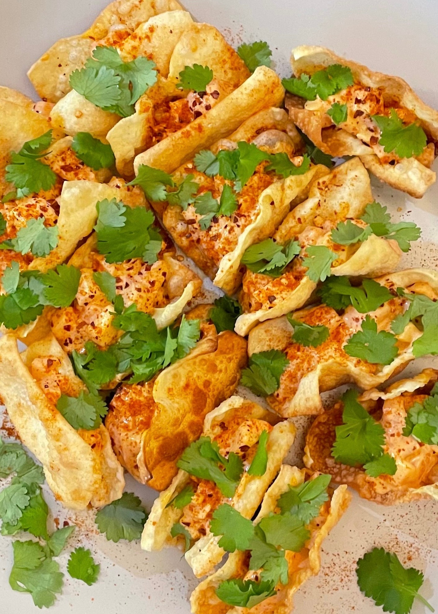

←
→
⌂
Wontontacos
Ingredienser:
- Wonton deg
- Sashimi lax
- Nashipäron
- Mango
- Gochujang
- Sriracha
- Majonäs
- Koriander
Instruktioner:
- Fritera wontondegen i rapsolja
- Blanda ihop gochujang, sriracha och majonäs.
- Skär laxen, nashipäronen och mangon i små bitar.
- Blanda allt och lägg i wontontacosen.
- Toppa med koriander och chiliflakes. ......................................... → Se allergier